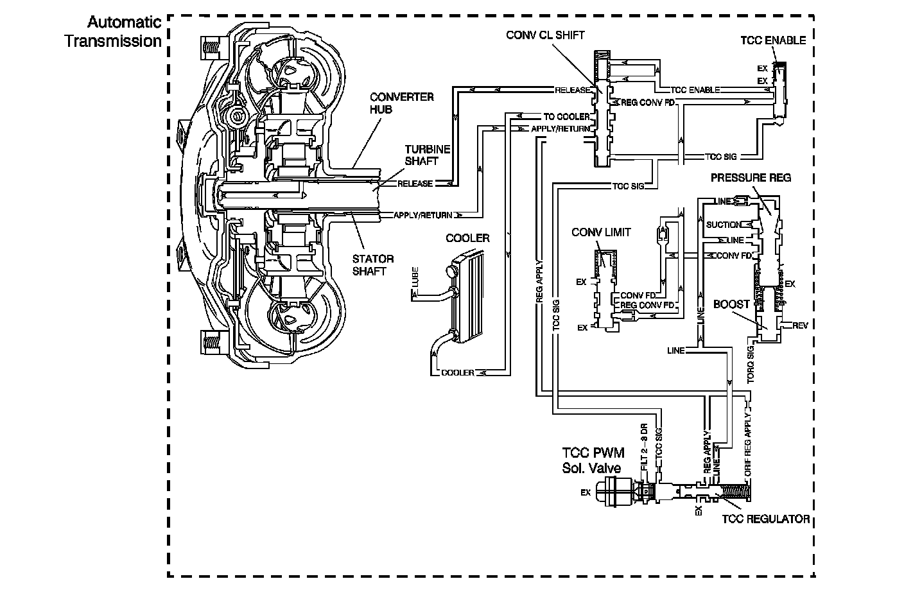

4L80-E / 4L85-E Automatic Transmission
DTC P0742

Circuit Description
The transmission control module (TCM) energizes the torque converter clutch pulse width modulated (TCC PWM) solenoid valve by grounding the control circuit. This blocks the exhaust for TCC signal fluid and allows filtered 2-3 drive fluid to feed the TCC signal circuit. When the vehicle operating conditions are appropriate for TCC application, the TCM increases the TCC duty cycle to approximately 30 percent. This allows TCC signal fluid pressure to move the converter clutch shift valve into the apply position and direct regulated apply fluid to the torque converter. The TCM then increases the duty cycle to approximately 60 percent, where regulated apply fluid pressure, applies the converter clutch. The vehicle application determines the TCC apply rate. Once the TCC applies, the duty cycle immediately increases to approximately 70 percent to achieve full apply pressure, in the regulated apply fluid circuit.
The TCC PWM solenoid valve is de-energized by the TCM opening the control circuit. This action allows the TCC signal fluid to exhaust through the solenoid and blocks filtered 2-3 drive fluid from entering the TCC signal circuit. The loss of fluid pressure in the TCC signal circuit releases the TCC.
If the TCM detects low TCC slip when the TCC is commanded OFF, then DTC P0742 sets. DTC P0742 is a type B DTC.
DTC Descriptor
This diagnostic procedure supports the following DTC:
DTC P0742 Torque Converter Clutch (TCC) System - Stuck On
Conditions for Running the DTC
^ No AT ISS DTCs P0716 or P0717.
^ No OSS DTCs P0722 or P0723.
^ No TCC DTC P0741.
^ No TCC electrical DTC P2763 or P2764.
^ The system voltage is 8-18 volts.
^ The engine run time is 5 seconds or greater.
^ The gear ratio is between 0.95:1 and 1.56:1.
^ The engine torque is greater than 50 N.m (37 lb ft).
^ The transmission fluid temperature (TFT) is between 20° C and 130° C (68° F and 266° F).
^ The commanded gear is not 1st.
^ The calc. throttle position is 8 percent or greater.
^ The vehicle speed is greater than 16 km/h (10 mph).
^ The TCC is commanded OFF.
Conditions for Setting the DTC
The TCC slip speed is between -15 and +15 RPM for 6 seconds or greater 4 times during the same ignition cycle.
Action Taken When the DTC Sets
^ The TCM requests the engine control module (ECM) to illuminate the malfunction indicator lamp (MIL) during the second consecutive trip in which the Conditions for Setting the DTC are met.
^ The TCM commands maximum line pressure.
^ The TCM forces the TCC ON.
^ The TCM freezes transmission adaptive functions.
^ The ECM records the operating conditions when the Conditions for Setting the DTC are met. The ECM stores this information as Freeze Frame and Failure Records.
^ The TCM records the operating conditions when the Conditions for Setting the DTC are met. The TCM stores this information as Failure Records.
^ The TCM stores the DTC P0742 in TCM history during the second consecutive trip in which the Conditions for Setting the DTC are met.
Conditions for Clearing the MIL/DTC
^ The ECM turns OFF the MIL during the third consecutive trip in which the TCM does not send a MIL illumination request.
^ A scan tool can clear the MIL/DTC.
^ The TCM clears the DTC from TCM history if the vehicle completes 40 warm-up cycles without an emission related diagnostic fault occurring.
^ The TCM cancels the DTC default actions when the fault no longer exists and the ignition switch is OFF long enough in order to power down the TCM.
Diagnostic Aids
^ If the TCC is mechanically stuck ON with the parking brake applied and any gear range selected, the TCC fluid mechanically applies the TCC. TCC fluid mechanically applying the TCC can cause an engine stall.
^ A stuck TP sensor may set a DTC P0742.
^ DTC P0742 defaults to an elevated line pressure condition which may result in partial TCC apply. This may produce an idle surge that could stall the engine.
Test Description
The number below refers to the step number on the diagnostic table.
2. This step verifies that the PCM commanded the TCC PWM solenoid valve OFF and the slip speed is -15 to +15 RPM.